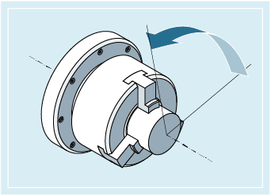

Mit SPOS, SPOSA oder M19 können Spindeln auf bestimmte Winkelstellungen positioniert werden, z. B. beim Werkzeugwechsel.
SPOS, SPOSA und M19 bewirken eine temporäre Umschaltung in den Lageregelbetrieb bis zum nächsten M3/M4/M5/M41 … M45.
Positionieren im Achsbetrieb
Die Spindel kann auch unter ihrer im Maschinendatum bestimmten Adresse als Bahn-, Synchron- oder Positionierachse verfahren werden. Mit Angabe des Achsbezeichners befindet sich die Spindel im Achsbetrieb. Mit M70 wird die Spindel direkt in den Achsbetrieb geschaltet.
Positionierende
Das Bewegungsendekriterium beim Positionieren der Spindel ist über FINEA, CORSEA, IPOENDA oder IPOBRKA programmierbar.
Sind die Bewegungsendekriterien für alle im Satz zu bearbeitenden Spindeln bzw. Achsen und außerdem das Satzwechselkriterium für die Bahninterpolation erfüllt, so erfolgt der Satzwechsel.
Synchronisation
Um Spindelbewegungen zu synchronisieren, kann mit WAITS bis zum Erreichen der Spindelposition gewartet werden.
Die zu positionierende Spindel muss im lagegeregelten Betrieb arbeiten können.
Spindel positionieren:
SPOS=<Wert> / SPOS[<n>]=<Wert>
SPOSA=<Wert> / SPOSA[<n>]=<Wert>
M19 / M<n>=19
Spindel in den Achsbetrieb umschalten:
M70 / M<n>=70
Bewegungsendekriterium festlegen:
FINEA / FINEA[S<n>]
COARSEA / COARSEA[S<n>]
IPOENDA / IPOENDA[S<n>]
IPOBRKA / IPOBRKA(<Achse>[,<Zeitpunkt>]) ; Programmierung im eigenen NC-Satz!
Spindelbewegungen synchronisieren:
WAITS / WAITS(<n>,<m>) ; Programmierung im eigenen NC-Satz!
| Spindel auf die angegebene Winkelstellung positionieren SPOS und SPOSA haben die gleiche Funktionalität, unterscheiden sich aber im Satzwechselverhalten:
| |||||||
| Nummer der Spindel, die positioniert werden soll. Ohne Angabe einer Spindelnummer oder mit Spindelnummer "0" bezieht sich SPOS bzw. SPOSA auf die Masterspindel. | |||||||
| Winkelstellung, auf die die Spindel positioniert werden soll | |||||||
Einheit: | Grad | |||||||
Typ: | REAL | |||||||
Für die Programmierung des Positionsanfahrmodus gibt es folgende Möglichkeiten: | ||||||||
| Absolute Maßangabe | |||||||
Wertebereich: | 0 … 359,9999 | |||||||
| Inkrementelle Maßangabe | |||||||
Wertebereich: | 0 … ±99 999,999 | |||||||
| Anfahren auf direktem Weg auf Absolutwert | |||||||
| Absolute Maßangabe, Anfahren in negativer Richtung | |||||||
| Absolute Maßangabe, Anfahren in positiver Richtung | |||||||
| wie DC(<Wert>) | |||||||
| Masterspindel (M19 oder M0=19) oder Spindel mit Nummer <n> (M<n>=19) auf die mit SD43240 $SA_M19_SPOS vorgegebene Winkelstellung mit dem in SD43250 $SA_M19_SPOSMODE vorgegebenen Positionsanfahrmodus positionieren Der NC-Satz wird erst weitergeschaltet, wenn die Position erreicht ist. | |||||||
| Masterspindel (M70 oder M0=70) oder Spindel mit Nummer <n> (M<n>=70) in den Achsbetrieb umschalten Es wird keine definierte Position angefahren. Der NC-Satz wird weitergeschaltet, wenn die Umschaltung ausgeführt wurde. | |||||||
| Bewegungsende bei Erreichen von "Genauhalt fein" | |||||||
| Bewegungsende bei Erreichen von "Genauhalt grob" | |||||||
| Bewegungsende bei Erreichen von "Interpolator-Stopp" | |||||||
| Spindel, für die das programmierte Bewegungsendekriterium wirksam sein soll | |||||||
| Spindelnummer | |||||||
Ohne Angabe einer Spindel [S<n>] oder mit Spindelnummer "0" bezieht sich das programmierte Bewegungsendekriterium auf die Masterspindel. | ||||||||
| Satzwechsel in der Bremsrampe möglich | |||||||
| Kanalachsbezeichner | |||||||
| Zeitpunkt des Satzwechsels bezogen auf die Bremsrampe | |||||||
Einheit: | Prozent | |||||||
Wertebereich: | 100 (Einsatzzeitpunkt der Bremsrampe) … 0 (Ende der Bremsrampe) | |||||||
Ohne Angabe des Parameters <Zeitpunkt> wird der aktuelle Wert des Settingdatums wirksam: SD43600 $SA_IPOBRAKE_BLOCK_EXCHANGE Hinweis: | ||||||||
| Synchronisationsbefehl für die angegebene(n) Spindel(n) Mit der Abarbeitung nachfolgender Sätze wird solange gewartet, bis die angegebene(n) und in einem früheren NC-Satz mit SPOSA programmierte(n) Spindel(n) ihre Position(en) erreicht haben (mit Genauhalt fein). | |||||||
| Warten, bis die angegebene(n) Spindel(n) stehen. | |||||||
| Warten, bis die angegebene(n) Spindel(n) ihre Solldrehzahl erreicht haben. | |||||||
| Nummern der Spindeln, für die der Synchronisationsbefehl gelten soll Ohne Angabe einer Spindelnummer oder mit Spindelnummer "0" bezieht sich WAITS auf die Masterspindel. | |||||||
| Hinweis |
Pro NC-Satz sind 3 Spindelpositionsangaben möglich. |
| Hinweis |
Bei Inkrementeller Maßangabe IC(<Wert>) ist die Spindelpositionierung über mehrere Umdrehungen möglich. |
| Hinweis |
Wurde vor SPOS die Lageregelung mit SPCON eingeschaltet, bleibt diese bis SPCOF erhalten. |
| Hinweis |
Die Steuerung erkennt aufgrund der Programmierabfolge selbständig den Übergang in den Achsbetrieb. Die explizite Programmierung von M70 im Teileprogramm ist daher grundsätzlich nicht mehr notwendig. M70 kann jedoch weiterhin programmiert werden, um z. B. die Lesbarkeit des Teileprogramms zu erhöhen. |
Siehe auch:
Spindeln positionieren (SPOS, SPOSA, M19, M70, WAITS): Weitere Informationen